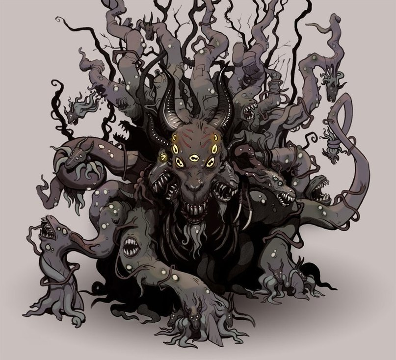

Повелительница лесов и Черная Козлица с легионом Младых, она известна c древних времен под разными именами рогатых божеств плодородия. Ее почитают бессмертные жители подземного К’ньяна, насекомоподобные Ми-го, скрывающиеся в лесах Америки потомки друидов приносят ей жертвы, а жители английского городка Готсвуд призывают её из подземной бездны при помощи загадочного артефакта — Лунной линзы. И Шуб-Ниггурат является к ним как огромное бесформенное-облако со множеством желтых глаз, ртов, щупалец и оканчивающихся копытами ног.
Тех, кто верно ей служит, она проглатывает и перерождает в жутких бессмертных гибридов, ставших прообразами мифических, сатиров и дриад, поэтому её также называют Великой Матерью. Вместе с ней всегда появляются и другие бесчисленные создания - черные древовидные твари с похожими на ветви щупальцами, копытами и ртами, которыми они приникают к земле, чтобы восславить свою мать, породившую божеств Нуги и Йеб.
Впервые упоминается в рассказе «Последний опыт» (The Last Test, 1927), написанном Г. Ф. Лавкрафтом в соавторстве с Адольфом де Кастро, а затем в повести «Курган» (The Mound, 1930), совместной с Зелией Бишоп, и рассказе «Шепчущий во тьме» (The Whisperer in Darkness, 1930).
